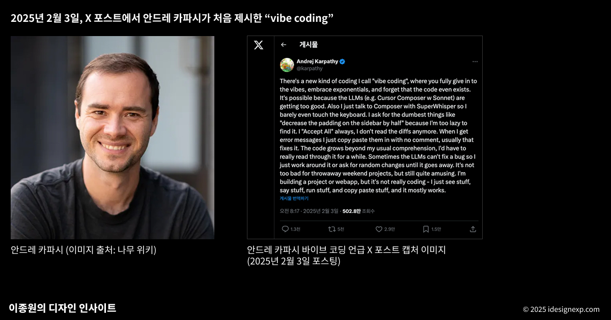
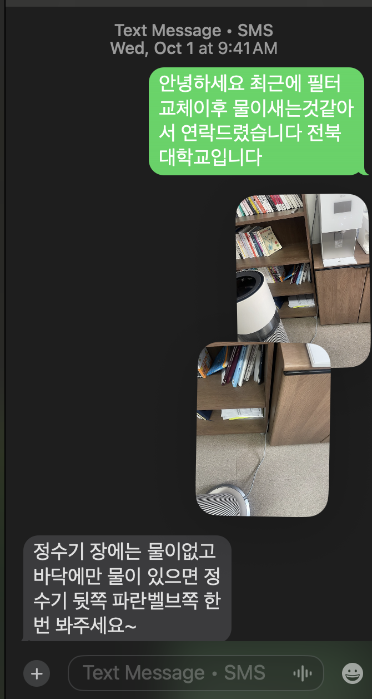
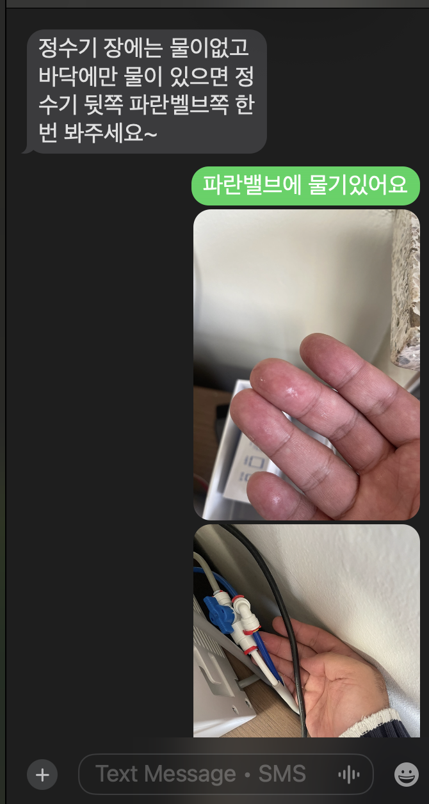

3. 주요개념
A. RAG
- Retrieval-Augmented Generation, 줄여서 RAG는 AI 언어 모델이 외부 지식 기반을 참조하여 답변을 생성하는 구조
- 전통적인 LLM은 학습된 데이터만을 기반으로 응답하지만 RAG는 (1) 질의에 관련된 정보를 외부 문서나 데이터베이스에서 가져오고 (2) 검색된 정보를 바탕으로 답변을 생성.
- 효과: 정확도 향상 (외부사실에 기반하므로 환각문제 최소화), 최신성 확보 (학습 이후 업데이트된 정보도 실시간 반영가능), 특정분야 대응성 강화 (기업문서나 전문 도메인자료를 응답에 활용할 수 있음.)
| 구분 | 내용 |
|---|---|
| RAG 이전 | - 모델은 학습된 파라미터 안에서만 답변 가능 - 최신 정보 반영 어려움 - 특정 도메인 전문 지식 부족 - “죄송하지만 2021년 9월 이후의 데이터는 모릅니다.”라는 한계 |
| RAG 이후 | - “내가 올린 문서에서 관련 부분 찾아 요약해줘” → 벡터DB에서 검색 후 LLM이 결합해 답변 - “최신 논문 내용을 반영해 설명해줘” → 외부 지식베이스 + 모델 결합으로 최신성 확보 - “우리 회사 데이터 기준으로 리포트 작성해줘” → 사내 문서/DB 연동해 맞춤형 응답 생성 |
B. 바이브코딩

- Andrej Karpathy가 2025년 2월에 대중화한 인공 지능 지원 소프트웨어 개발 기술
- 개발자가 프로젝트나 작업을 대규모 언어 모델 (LLM)에 설명하면, LLM은 프롬프트 를 기반으로 코드를 생성
- 개발자는 코드를 검토하거나 수정하지 않고, 도구와 실행 결과만을 사용하여 코드를 평가하고 LLM에 개선 사항을 요청
- 바이브 코딩 옹호자들은 이를 통해 아마추어 프로그래머 조차도 소프트웨어 엔지니어링에 필요한 광범위한 교육과 기술 없이 소프트웨어를 생산할 수 있다고 말함
Examples
C. MCP
- Model Context Protocol (MCP)은 AI 어시스턴트가 외부 데이터 소스와 도구에 안전하고 통제된 방식으로 접근할 수 있도록 하는 개방형 표준 프로토콜을 의미.
- MCP는 AI 모델과 외부 시스템 간의 표준화된 인터페이스를 제공. 이를 통해 AI는 파일 시스템, 데이터베이스, 웹 API, 비즈니스 시스템 등 다양한 컨텍스트 소스에 접근할 수 있음.
Examples
| 구분 | 내용 |
|---|---|
| MCP 이전 | - ChatGPT: “저는 당신의 이메일을 볼 수 없어서…” - Claude: “제가 당신의 캘린더에 접근할 수 없어서…” - Gemini: “죄송하지만 개인 파일은 확인할 수 없습니다…” |
| MCP 이후 | - “지난 3개월간 가장 중요했던 이메일 10개 요약해줘” → Gmail MCP 서버가 실제 이메일 데이터 분석 - “내일 회의 준비를 위해 관련 문서들 정리해줘” → Calendar + Drive + Slack MCP가 연동되어 완벽한 브리핑 생성 - “이번 프로젝트 진행상황을 팀에게 보고서로 만들어줘” → Jira + GitHub + 내 작업 로그를 종합한 자동 리포트 |
D. Agentic Coding
- 에이전틱 코딩은 AI 에이전트가 자율적으로 코딩 작업을 수행하는 패러다임. 단순히 코드 생성을 넘어서, 계획 수립부터 실행, 테스트, 디버깅까지 전체 개발 과정을 AI가 주도적으로 처리.
- ChatCPT에게는 답을 물어볼 수 있고, Claude Code에게는 일을 시킬 수 있다.

- 제가 이해한 에이전틱 코딩
- 사건: 제 연구실에 있던 정수기에서 물이 샜습니다.




에이전틱 코딩의 활용
예제 – 관심있는 연구논문 정리


4. AI활용에 대한 비판
A. 바이브코딩에 대한 비판
- Programmer Simon Willison (바이브코딩 옹호자) said:
“If an LLM wrote every line of your code, but you’ve reviewed, tested, and understood it all, that’s not vibe coding in my book—that’s using an LLM as a typing assistant.”
- 저의 생각: 아무리 바이브 코딩이 좋다고 해도 사이먼 윌리슨의 발언은 좀 과하지 않나??
Examples
B. Francis Geng의 연구
Francis Geng 연구팀은 “바이브 코딩(Vibe Coding)”이라는 새로운 프로그래밍 워크플로우에서 학생들이 AI 도구와 어떻게 상호작용하는지, 그리고 이러한 상호작용이 프로그래밍 경험 수준에 따라 어떻게 다른지 조사하였음 [3]
실험설계: 연구에는 북미 연구 중심 대학의 두 컴퓨터 과학 강좌에서 모집된 총 19명의 학생이 참여했음: 초급 프로그래밍(CS1) 과정 학생 9명과 고급 소프트웨어 공학(SWE) 과정 학생 10명. 모든 참가자는 브라우저 기반 AI 통합 IDE인 Replit 플랫폼을 사용하여 개인 예산 관리 웹 애플리케이션을 구축하는 개방형 과제를 수행.
발견1: 학생들은 대부분의 시간을 AI가 만든 프로토타입을 테스트하는데 사용함.

- 학생들이 가장 많이 한 활동은 프로토타입 상호작용임. (64%) 즉, “내가 만든 앱이 제대로 돌아가는가?” 확인하는데 쓰였음.
- 두번째로 많이 한 행동은 프롬프트 작성 (21%):
- 심지어 프롬프트를 작성한 이유 중 가장 많은것은 새기능 요청이 아니라 디버깅 요청임 (61%)1
- 실제 코드를 짜거나 들여다보고 고치는데 쓴 시간은 거의 없었음. (7%)
- 이마저도 90.37%는 단순 코드 해석에 투자하였으며,
- 직접적인 코드 수정은 9.63%에 불과했음.2
발견2: 초보자와 숙력자의 차이 (프로프트 작성 능력의 차이) 
C. 왼쪽길을 지지하는 사람들의 의견
- AI시대 코딩에 필요한 역량을 요약하면 아래와 같음:
- 테스트 & 디버깅
- 풍부한 맥락의 프롬프팅: 기술적 정확성으로 문제를 설명하는 능력
- 코드 이해력: AI 결과물을 이해하는 기술
- 쉽게 말하면, 코딩 할 줄 알아야 한다는 의미.
제 의견(?)
테서렉트
References
[1]
J. 이종원 (Lee, “이종원의 디자인 인사이트.” https://idesignexp.com/main, 2025.
[2]
R. Sapkota, K. I. Roumeliotis, and M. Karkee, “Vibe coding vs. Agentic coding: Fundamentals and practical implications of agentic ai,” arXiv preprint arXiv:2505.19443, 2025.
[3]
F. Geng et al., “Exploring student-AI interactions in vibe coding,” arXiv preprint arXiv:2507.22614, 2025.